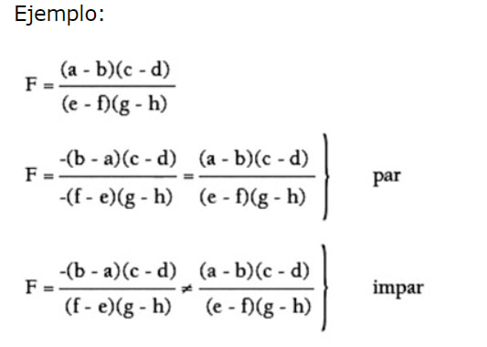
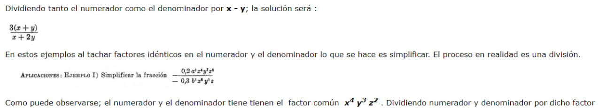

Ejemplos esenciales de Álgebra
Ejemplos de suma con ley de los signos:
En la Suma, los números se añaden conservando el signo que tengan. Si tienen el mismo signo, los valores se acumulan. Si los signos son opuestos, los valores se contrarrestan hacia el número de valor más elevado:
(+8) + (+20) = +28
(+10) + (-2) = +8
(-24) + (+5) = -19
(-18) + (+14) = -4
(+7) + (-13) = -6
(+9) + (-21) = -12
(-5) + (-25) = -30
(-14) + (-28) = -42
(+10) + (-5) = +5
(+10) + (-9) = +1
Ejemplos de Resta con Ley de los signos:
En la Resta, se cambia el signo del número que sigue al signo de la operación, y se procede a añadir los números:
(+8) - (+20) = (+8) - 20 = -12
(+10) - (-2) = (+10) + 2 = +12
(-24) - (+5) = (-24) - 5 = -29
(-18) - (+14) = (-18) - 14 = -32
(+7) - (-13) = (+7) + 13 = +20
(+9) - (-21) = (+9) + 21 = +30
(-5) - (-25) = (-5) + 25 = +20
(-14) - (-28) = (-14) + 28 = +14
Ejemplos de Multiplicación con Ley de los signos:
En la Multiplicación, si ambos signos son iguales, el signo será Positivo en el resultado:
(+8) x (+2) = +16
(-10) x (-2) = +20
(-2) x (-5) = +10
(+18) x (+2) = +36
Y si los signos son contrarios, el resultado será negativo:
(+7) x (-3) = -21
(+9) x (-2) = -18
(-8) x (+2) = -16
(-4) x (+8) = -32
Ejemplos de División con Ley de los signos:
En la División, como en la Multiplicación, si ambos signos son iguales, el resultado tendrá signo positivo.
(+8) ÷ (+2) = +4
(-10) ÷ (-2) = +5
(-9) ÷ (-3) = +3
(+12) ÷ (+2) = +6
Y si los signos son contrarios, el resultado será negativo:
(+7) ÷ (-1) = -7
(+10) ÷ (-2) = -5
(-20) ÷ (+2) = -10
(-16) ÷ (+8) = -2
Ejemplos Exponentes y Radicales
Ejemplos Expresiones Fraccionarias
Suma y resta de fracciones de igual denominador
Cómo sumar fracciones: Son las más sencillas de trabajar. Identificamos si todas las fracciones tienen el mismo denominador, en este caso, mantendremosel mismo denominador y solamente tenemos que sumar o restar los numeradores, no es nada complicado, veamos un ejemplo.
Suma de fracciones
Resta de fracciones
Suma y resta de fracciones con diferente denominador
Las reglas cambian cuando tenemos fracciones dónde existe dos o más denominadores, en este particular caso es necesario el mínimo común múltiplo de los denominadores. El primer paso es multiplicar los denominadores para obtener el MCM, este será el nuevo denominador del resultado, después tenemos que multiplicar de forma cruzada para obtener los numeradores y los sumamos o restamos, según corresponda.
Lo siguiente es obtener la fracción final, para ello tenemos que simplificar la fracción que hemos obtenido. Eso quiere decir que vamos a ir dividiendo el numerador y denominador entre un mismo factor, comenzando por el dos, cuando ambos números no puedan ser divididos entre el mismo factor, esa será el resultado final.
Ejemplo suma de fracciones con diferente denominador
Para la resta de fracciones con diferente denominador se opera de la misma manera.
Multiplicación de fracciones
Para poder resolver una multiplicación de fracciones se requiere multiplicar numerador por numerador y denominador por denominador, esta misma regla se aplica hasta con más de dos fracciones, el resultado final o la fracción que dé como resultado se simplifica.
En el caso de que utilices un número entero, no hay problema, a menos que el resultado lo quieras en una fracción, solo tendrías que multiplicar el número entero por el denominador y obtendrías el resultado, así de sencillo es hacerlo.
División de fracciones
Es quizás, la operación que resulta un poco más compleja del resto, con fracciones puede que se te complique un poco, pero una vez que comiences a practicar, verás que no tiene nada de difícil este tipo de operaciones. Cabe mencionar que las reglas que he de mencionar, son válidas para operaciones con dos fracciones.
Lo primero es multiplicar el numerador de la primera fracción por el denominador de la segunda, este sería el nuevo numerador; multiplicamos el denominador de la primera fracción por el numerador de la segunda y sería el nuevo denominador, es decir, se hace una multiplicación cruzada, al final simplemente simplificamos.
En el caso de que sean tres fracciones, se multiplica el numerador de la primera por el denominador de la segunda y el numerador de la tercera, así obtenemos el nuevo denominador. El numerador lo obtenemos al multiplicar el denominador del primero por numerador del segundo y el denominador de la tercera.
CUANDO LA FRACCIÓN TIENE PRODUCTOS INDICADOS
En toda fracción, si se cambia de signo a un número par de factores, la fracción no cambia de signo ; si se cambia de signo a un número impar de factores, la fracción sí cambia de signo.

Simplificación de fracciones algebraicas. – Simplificar una fracción algebraica, significa encontrar otra fracción igual a la dada, cuyos términos sean de grado menor que los de la primera.
En aritmética se enseña que el valor de una fracción no cambia si tanto el denominador como el numerador son multiplicados por el mismo número (excepto cero), o si tanto el numerador como el denominador son divididos por el mismo número (excepto cero), o sea
Para simplificar fracciones se factoriza.

La observación de este ejemplo y la consideración de que en cualquier otro caso se procedería de la misma manera, nos permiten dar la siguiente:
